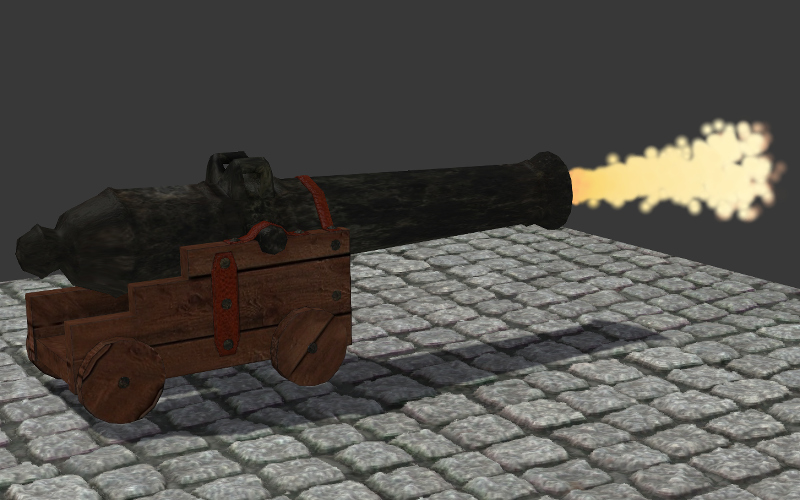

Particle System¶
The particle system is intended to visualize phenomena which are caused by the movement of numerous small objects such as smoke, fire, water splashes and other.

A particle system requires an emitter - an object which defines the location and the direction of the outgoing particles flow.
Use¶
Necessary steps¶
Add a mesh emitter to the scene.
Create a material for particles on the emitter, for example of the Halo type. The Surface material type with a mandatory diffuse texture is also supported.
Add a particle system on the emitter.
- Initiate the engine playback. Two options are available:
“cyclic emission” - enable the Blend4Web > Cyclic emission checkbox for the particle system.
“non-cyclic animation” - enable the Blend4Web > Animation > Use default checkbox for the emitter.
Recommended additional settings¶
Set the Add transparency type for the particles’ material.
Disable emitter rendering if needed using the Particles > Render > Emitter checkbox.
If an emitter is required on a scene use additional materials for it. In this case select the particles’ material in the Particles > Render > Material menu on the particles settings panel.
If the Surface material type is used it is required to add a diffuse texture (normally with the alpha channel) to this material. Select UV in the Mapping > Coordinates menu. Make sure that the emitter’s mesh has a UV layer.

Setup¶
The particle system parameters can be set up under the Particles tab. Multiple particle systems per emitter are supported.
Basic settings¶
- Name
Particle system name. The default name is “ParticleSystem”.
- Settings
Reference to the settings datablock of the particle system. The datablock settings can be shared between different particle systems.
- Type
Particle system type: Emitter or Hair. Hair particle systems can be used to create numerous copies of an object (so called instancing). The default is Emitter.
- Seed
Index in the table of random numbers which are used for particle system generation. The default value is 0.
Emission settings¶
- Emission > Number
Number of particles. The default value is 1000.
- Emission > Start
The first frame after which the emission of particles starts. The default value is 1.0.
- Emission > End
The last frame after which the emission of particles ends. The default value is 200.0.
- Emission > Lifetime
The life time of particles measured in frames. The default value is 50.0.
- Emission > Lifetime > Random
The random factor for the life time. The default value is 0.0.
- Emission > Emit From
Emission source type. The following types are supported: Verts (emit from vertices), Faces (emit from polygons). The default is Faces.
- Emission > Emit From > Distribution
Emission distribution settings: Jittered, Random, Grid. Ignored by the engine. Internally the engine always uses Random distribution. The default is Jittered.

Direction settings¶
Only the following settings are supported:
- Velocity > Emitter Geometry > Normal
Factor influencing the emission along the emitter’s mesh normals. The default value is 1.0.
- Velocity > Other > Random
Factor of randomization for emission direction. The default value is 0.0.
Rotation settings¶
Only the following settings are supported:
- Rotation > Angular Velocity > Mode
Mode for particle billboards self-rotating. The following modes are supported: Velocity (constant rotation speed), Random (random rotation), None (no rotation). The default is Velocity.
- Rotation > Angular Velocity > Factor
Factor of rotation velocity for particle billboards. The default value is 0.0.
Physics settings¶
Only the following settings are supported:
- Physics > Type
Physics calculation type: No, Newtonian, Keyed, Boids, Fluid. Ignored by the engine. Newtonian physics is always used. The default is Newtonian.
- Physics > Size
Particle size. The default value is 0.05.
- Physics > Mass
Particle mass. Affects interaction with force fields (such as wind). The default value is 1.0.
- Physics > Forces > Brownian
Exported but not used by the engine.
{kind=link}
Rendering settings¶
Only the following settings are supported:
- Render > Material
Menu for selecting the particle’s material. Used for referencing to the particle’ material in case multiple materials are used by the emitter. The default value is Default Material.
- Render > Emitter
Enables emitter rendering on the scene. Enabled by default.
- Render > Type
Particle rendering mode: None, Halo, Line, Path, Object, Group, Billboard. The engine supports the Object and the Group modes which are used for objects and groups instancing respectively. Other modes are ignored. It is recommended to use the Billboard mode for convenient display of billboards. The default is Halo.
Supported settings for force fields influence¶
Only the following settings are supported:
- Field Weights > Gravity
Gravity influence factor (Earth’s attraction). The default value is 1.0.
- Field Weights > Wind
Wind influence factor. A Wind force field source should be present (can be added using Add > Force Field). A particle system is also influenced by the wind direction and strength. The default value is 1.0.
Engine specific settings¶
- Blend4Web > Do not export
Unsupported.
- Blend4Web > Cyclic emission
The option enables the cyclic emission mode. It can be used for permanent effects (such as smoke, burning, water splashes). It is recommended to set the Emission > Start value to zero. Disabled by default.
- Blend4Web > Random emission
The option enables a random emission time for particles. Disabled by default.
- Blend4Web > Billboard align
The way billboards are oriented: View - follow the camera, XY plane, YZ plane, ZX plane - align to the corresponding plane (in the world coordinate system of Blender). The default is View.
- Blend4Web > Dissolve intervals > Fade-in and Fade-out
Starting and ending intervals (measured in frames) for gradually increasing and decreasing the particles’ transparency.
Textures in Particle Systems¶
Textures of the particle’s material¶
For the Surface particle’s materials it is required to have a diffuse texture (normally with an alpha-channel). In the Mapping > Coordinates menu choose the UV option. Make sure that the emitter’s mesh has a UV layer.
For the Halo particle’s materials it is possible to use a Blend texture with a Linear gradient. In the Mapping > Coordinates menu choose the Strand / Particle option. It is required to enable Ramp on a texture. Up to 4 gradient control points are supported.

Textures of particle systems¶
Textures can also be used for setting up the behaviour of particle systems. Unlike textures for particle materials such textures belong to the particle system datablock, not to the material datablock. To create a texture for the particle system it is required to go from the Particles tab to the Textures tab and then to click the New button.
The only supported type of textures is Blend with a Linear gradient. Ramp should be enabled on the texture. Up to 4 gradient control points are supported.
On the Influence panel choose the parameter which is influenced by the texture. At the moment the only supported parameter is Size.

The result of using gradient textures on the particle material and the particle system:
{kind=link}